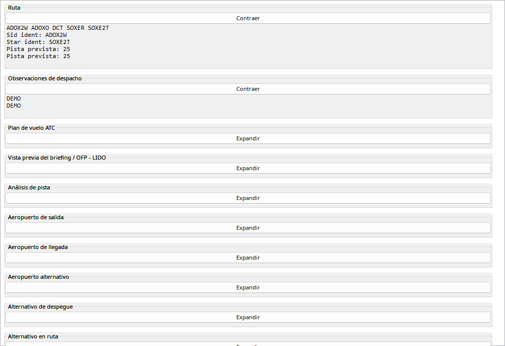
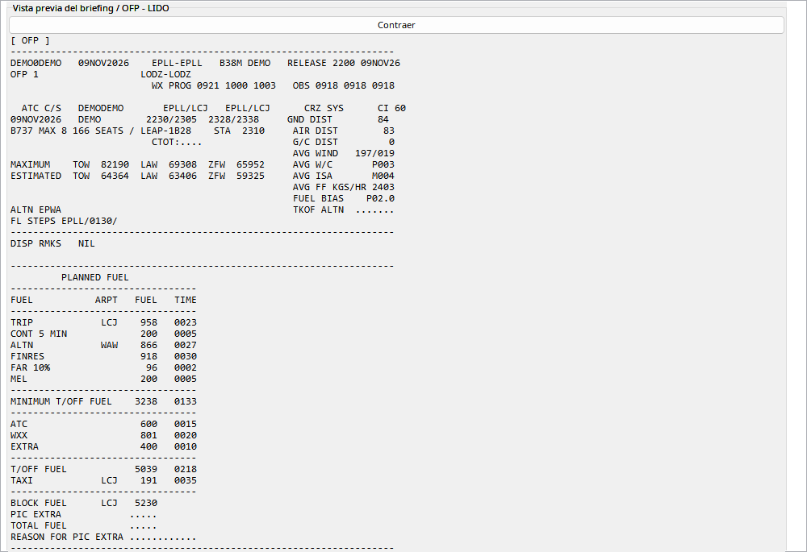

El manual usa un plan EPLL–EPLL anonimizado. Vuelo/matrícula son de ejemplo; se excluyen cuenta, tripulación y enlaces personales. OFP contiene planificación, no medidas de telemetría.
Abra secciones por separado. La rueda desplaza también sobre texto OFP. Los mapas se guardan como imágenes con el vuelo. No se presentan planes históricos a VATSIM u otras redes. Compare aeropuertos, avión y hora antes de asociar.
Fuente de plan/briefing, no medición. Importación necesita identificador de cuenta y red.
| Opción / acción | Funcionamiento y limitaciones |
|---|---|
| Importar | Descargue OFP y verifique avión, ruta y hora prevista antes de asociarlo. |
| OFP | Texto nativo monoespaciado de solo lectura; rueda desplaza el contenedor también sobre el texto. |
| Mapas | Descargados y guardados con el vuelo, no simples enlaces GIF; utilizables sin URL remota posterior. |
| Comparar | Masa/combustible/viento previstos no son valores reales. Plan coincidente puede nombrar puntos EFB con distinto AIRAC. |
| Sin presentación | OFP históricos no se presentan en VATSIM/otras redes; no existe esa acción. |

